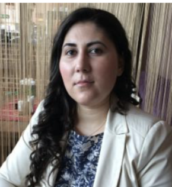

|  |
Ioana Kada International Teacher, Head of Department IB and IGCSE Examiner and Moderator Computer Science Department at Rossall School Fleetwood, FY7 8JW, UK |
I am a Computer Science Teacher and Head of Academic I.T at Rossall School, Fleetwood. I am teaching iGCSE and Computer Science A Level Computer Science curriculum. At the same time I am an online IB DP course provider, collaborating with Mark Twain International School Bucharest, Romania and I am providing online tutoring to individual and groups of students across Europe. I am an OSC teacher and an IB and IGCSE Computer Science Examiner and Internal Assessment Moderator.
| Dates | Work |
|---|---|
| 2017 - Present | Head of Academic I.T, Computer Science Teacher at Rossall School UK |
| 2014 - 2017 | Head of Department, Computer Science Teacher at ISR International School on the Rhine Germany |
| 2011 - 2014 | Head of Department, Computer Science Teacher at Mark Twain International School Romania |
| 2007 - 2009 | Mathematics, Computer Science/ICT Teacher at Bucharest Beirut International School Romania |
| Other collaborations | |
| 2018 - Present | IB DP Computer Science Teacher Oxford Study Courses |
| 2017 - Present | Online IB DP Course Provider at Mark Twain International School |
| 2007 | IT Consultant at AQUA Development |
| 2016 - Present | Examiner for IGCSE 0478 Computer Science |
| 2015 - Present | Examiner(HL paper) and IA moderator (SL and HL) for IB DP |